Explore Famous Places In Maharashtra
Browse Maharashtra's most celebrated 5 holy Jyotirlingas, Ashtavinayak temples, Sahyadri hill stations, royal Maratha forts, UNESCO wonders, and pristine Konkan beaches. Click 'Book on WhatsApp' for instant rates and confirmed luxury coaches from Pune Head Office!
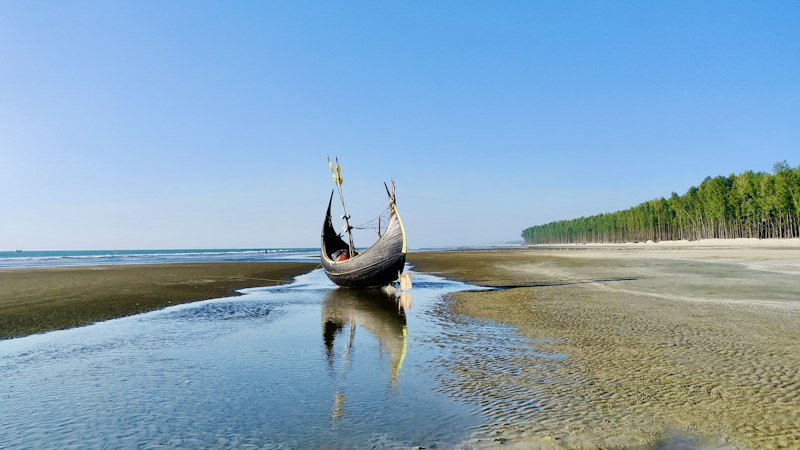
🛕 Jyotirlinga • NashikTrimbakeshwar Jyotirlinga, Nashik
One of the most sacred of the 12 Jyotirlingas, where Lord Shiva resides as a three-faced linga representing Brahma, Vishnu, and Mahesh at the origin of the holy Godavari River.
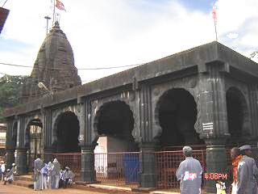
🛕 Jyotirlinga • PuneBhimashankar Jyotirlinga, Pune Sahyadri
Set amidst the lush mist-covered Sahyadri mountain range in Pune district, this Jyotirlinga temple features exquisite Nagara style architecture and is the origin of the Bhima River.
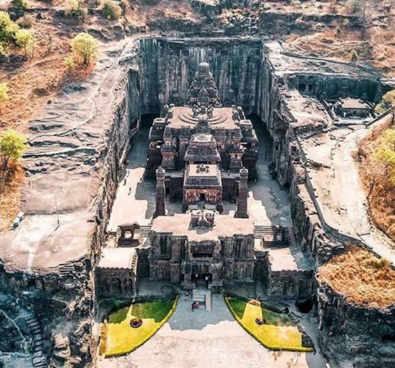
🛕 Jyotirlinga • SambhajinagarGrishneshwar Jyotirlinga & Ellora Caves
The 12th and final Jyotirlinga mentioned in the Shiva Purana, built from red basalt stone by Ahilyabai Holkar, situated just 1 km from the world-famous UNESCO Ellora Caves.
Parli Vaijnath Jyotirlinga, Beed
Perched on a small hill in Marathwada, this revered Jyotirlinga is worshipped as Vaidyanath (the lord of healing and physicians), surrounded by sacred medicinal spring waters.
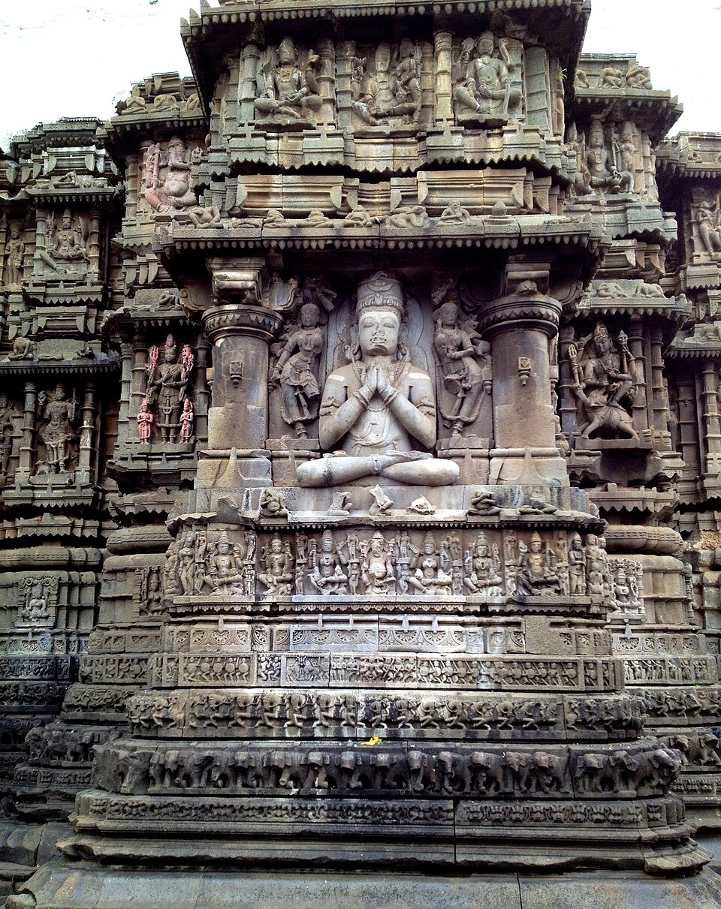
🛕 Jyotirlinga • HingoliAundha Nagnath Jyotirlinga, Hingoli
Believed to be established by the eldest Pandava Yudhishthira, this 8th Jyotirlinga has profound Hemadpanthi rock carvings and is immortalized by Saint Namdev.
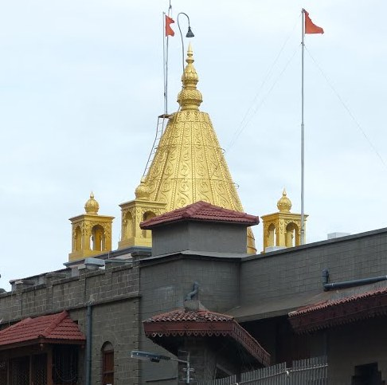
🚩 Pilgrimage • AhmednagarShirdi Sai Baba Samadhi Mandir
World-renowned holy pilgrimage town where Sadguru Sai Baba taught love, tolerance, and "Sabka Malik Ek". Millions gather for the divine Kakad, Madhyan, and Dhoop Aartis.
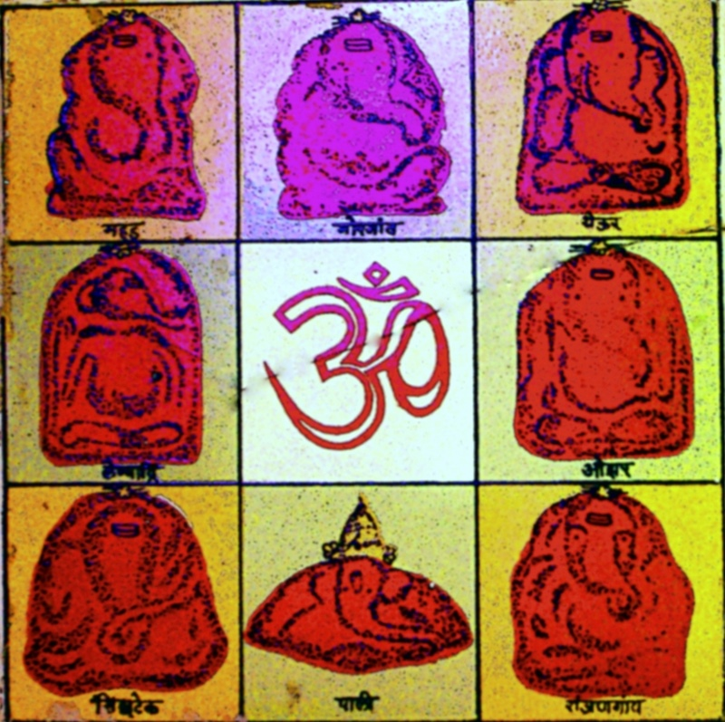
🚩 Pilgrimage • MaharashtraAshtavinayak 8 Ganpati Sacred Circuit Tour
The complete eight swayambhu (self-manifested) Ganesha temples in Maharashtra: Mayureshwar, Siddhivinayak, Ballaleshwar, Varadvinayak, Chintamani, Girijatmaj, Vighnahar, and Mahaganapati.
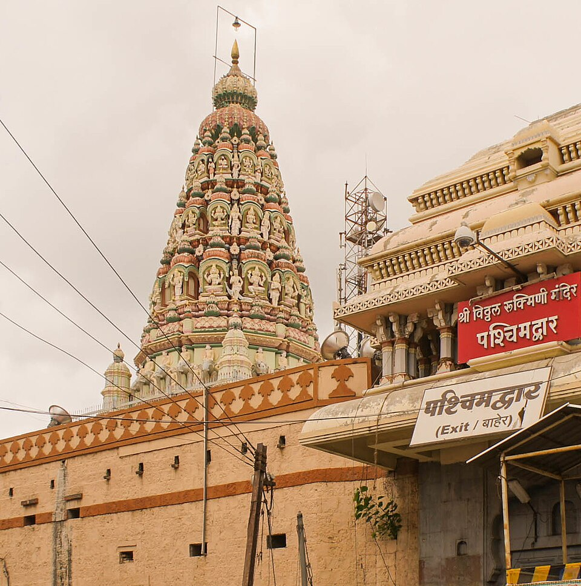
🚩 Pilgrimage • SolapurPandharpur Vitthal Rukmini Mandir
The spiritual heart of Maharashtra on the banks of holy Chandrabhaga River, where Lord Vitthal and Rakhumai are worshipped with unparalleled devotion by millions of Varkaris.
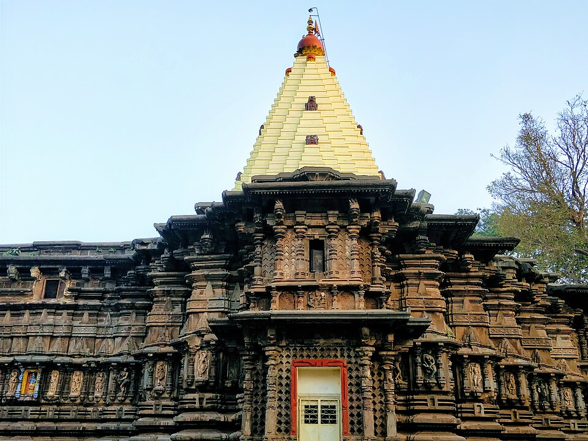
🚩 Pilgrimage • KolhapurKolhapur Mahalakshmi (Ambabai) Mandir
One of the prime 51 Shaktipeethas of India, the 7th-century Chalukya-style stone temple is where Goddess Mahalakshmi blesses devotees with wealth, prosperity, and peace.
 🚩 Pilgrimage • Dharashiv
🚩 Pilgrimage • Dharashiv
Tuljapur Bhavani Mata Mandir
The supreme Kulswamini of Maharashtra and divine patron goddess of Chhatrapati Shivaji Maharaj, who blessed him with the sacred Bhavani Talwar (sword) for Swarajya.
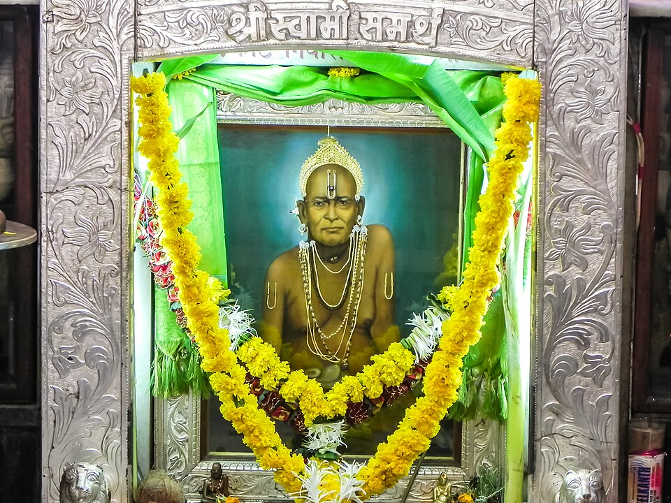
🚩 Pilgrimage • SolapurAkkalkot Shri Swami Samarth Mandir
The eternal abode and samadhi of 19th-century divine saint Shri Swami Samarth Maharaj (incarnation of Lord Dattatreya), famous for the holy Vatavruksha (Banyan Tree) shrine.
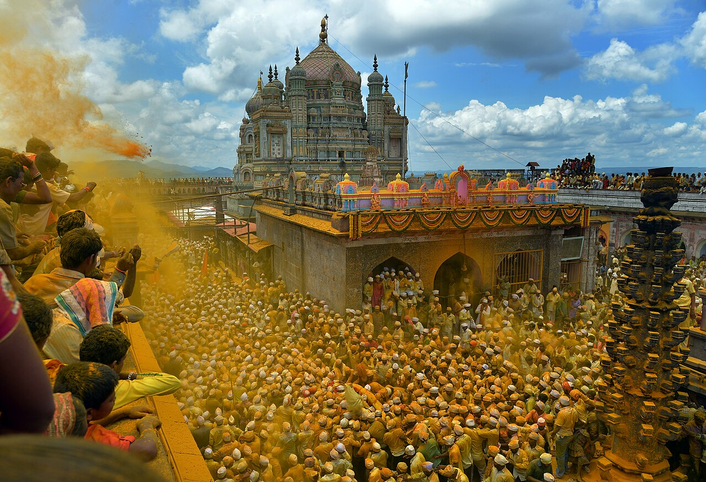
🚩 Pilgrimage • PuneKhandoba Mandir, Jejuri (Golden Temple)
Perched high on a hill near Pune, Jejuri is the supreme shrine of Lord Khandoba (Malhari Martand), famous across the world for the vibrant golden turmeric (Bhandara) showers.
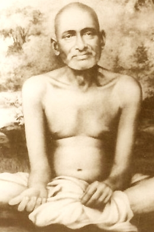
🚩 Pilgrimage • BuldhanaShri Sant Gajanan Maharaj Mandir, Shegaon
Known as the "Pandharpur of Vidarbha", Shegaon is home to the peaceful marble Samadhi Mandir of revered saint Shri Gajanan Maharaj and the sprawling spiritual park Anand Sagar.
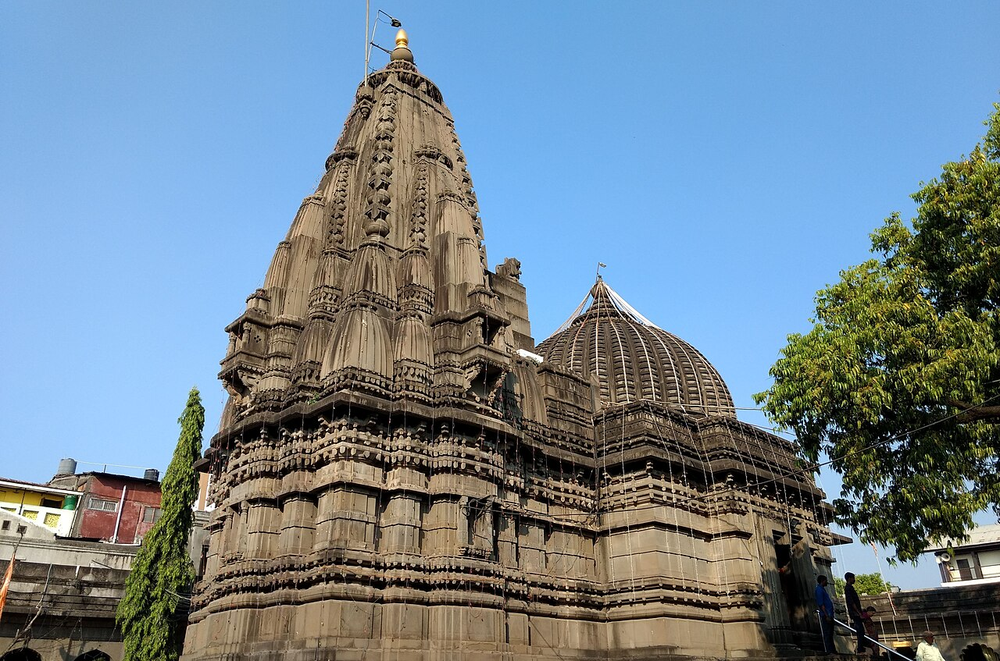
🚩 Pilgrimage • NashikPanchavati, Sita Gufa & Ramkund, Nashik
The sacred holy land where Lord Rama, Sita Mata, and Lakshmana spent their exile in the Dandakaranya forest. Features the 5 banyan trees, Sita Gufa, and the black-stone Kalaram Temple.
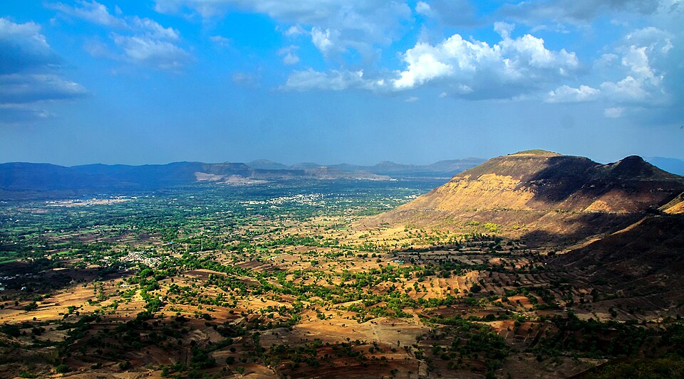
⛰️ Sahyadri Hill • SataraMahabaleshwar & Panchgani Hill Station
The queen of Maharashtra hill stations nestled in the Western Ghats at 1,353m altitude. Renowned for lush strawberry gardens, Venna Lake boating, Wilson Point sunrise, and table land in Panchgani.
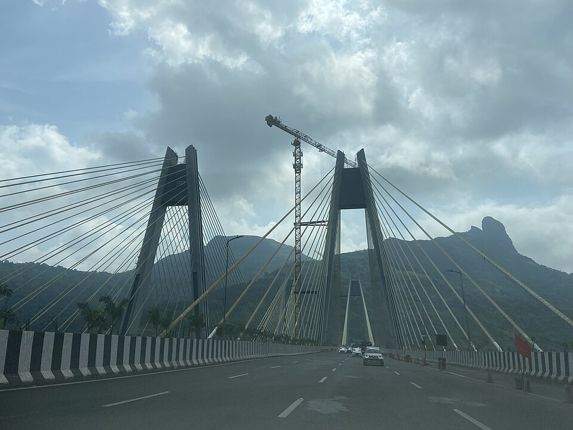
⛰️ Sahyadri Hill • PuneLonavala, Khandala & Karla Caves
Maharashtra's most beloved twin hill stations, perched on the Mumbai-Pune Expressway with plunging mist-covered cliffs, gushing monsoon waterfalls, Bhushi Dam, and ancient 2nd-century BC Karla rock caves.
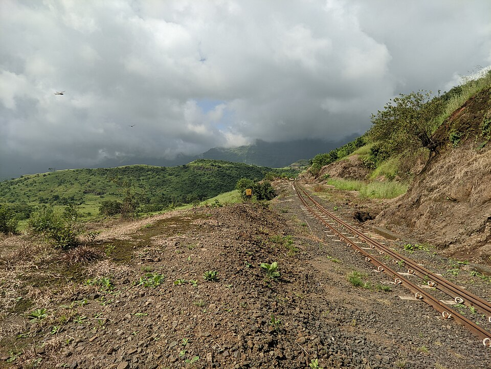
⛰️ Sahyadri Hill • RaigadMatheran Eco-Sensitive Hill Station
Asia's only automobile-free hill station, perched high at 800m. Preserves pristine red-soil forest trails, historic heritage toy train, Charlotte Lake, and 38 breathtaking cliff viewpoints.
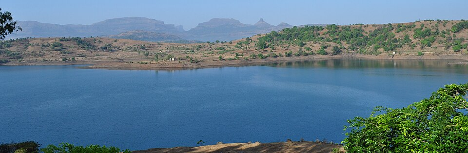
⛰️ Sahyadri Hill • AhmednagarBhandardara Lake & Arthur Hill Station
A hidden, tranquil paradise nestled beside the pristine Arthur Lake and Wilson Dam, surrounded by Maharashtra's tallest mountain ranges and spectacular Randha Waterfalls.
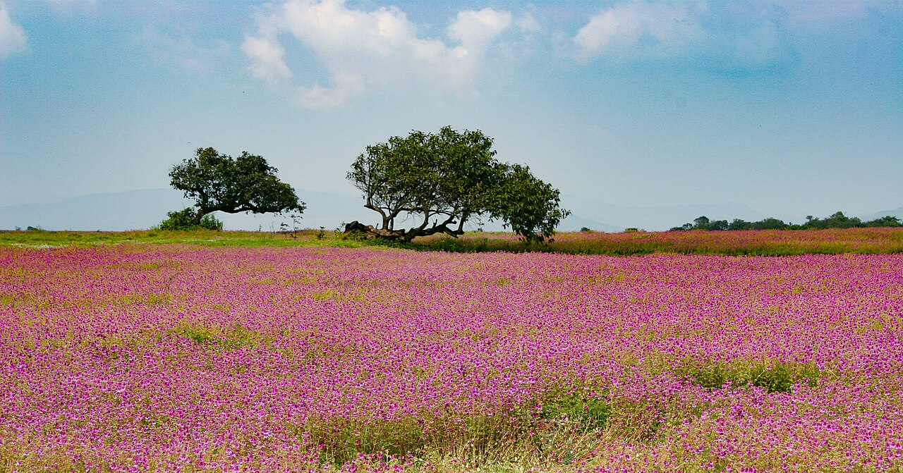
⛰️ UNESCO Nature • SataraKaas Plateau (Valley of Flowers of Maharashtra)
A UNESCO World Natural Heritage site near Satara, where over 850 species of rare wildflowers bloom into vibrant pink, purple, and yellow carpets across the volcanic plateau every monsoon.
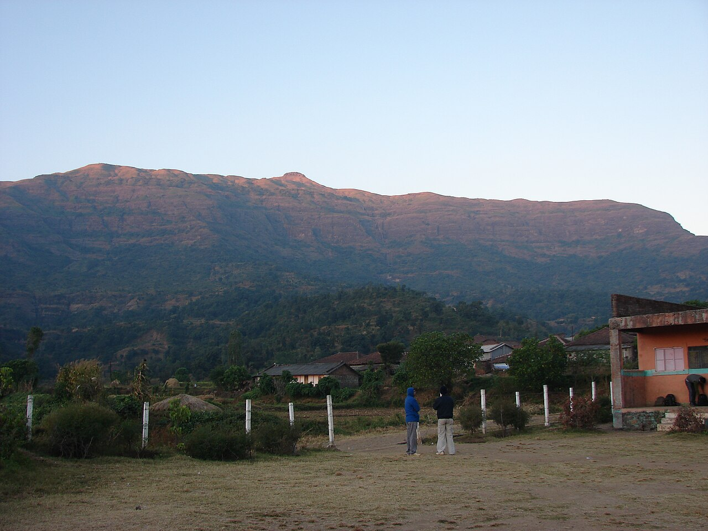
⛰️ Sahyadri Peak • AhmednagarKalsubai Peak (Highest Peak of Maharashtra - 1646m)
Reverently hailed as the "Everest of Maharashtra", Kalsubai stands at 1,646 meters (5,400 ft) offering unrivaled 360-degree vistas of Bhandardara, Arthur Lake, and Sahyadri forts.
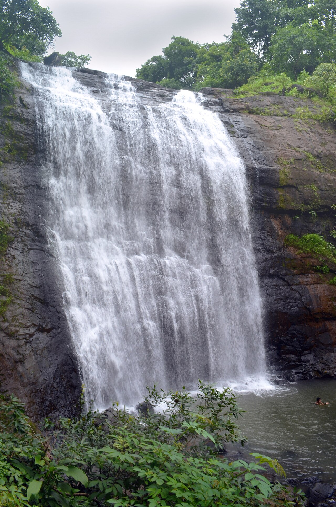
⛰️ Sahyadri Hill • NashikIgatpuri Hill Station & Sahyadri Waterfalls
A stunning Sahyadri hill retreat located in the Western Ghats, famed for misty monsoon waterfalls, dense forest trails, ancient forts, and the world's largest Vipassana meditation center Dhamma Giri.
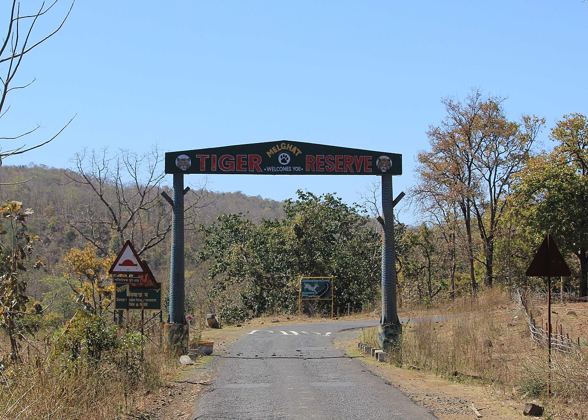
⛰️ Hill Station • AmravatiChikhaldara Hill Station & Coffee Plantations
Vidarbha's only hill resort perched at 1,118m on the Chikhaldara plateau, boasting cool climate, fragrant coffee plantations, panoramic viewpoints, and the historical Gavilgad Fort.
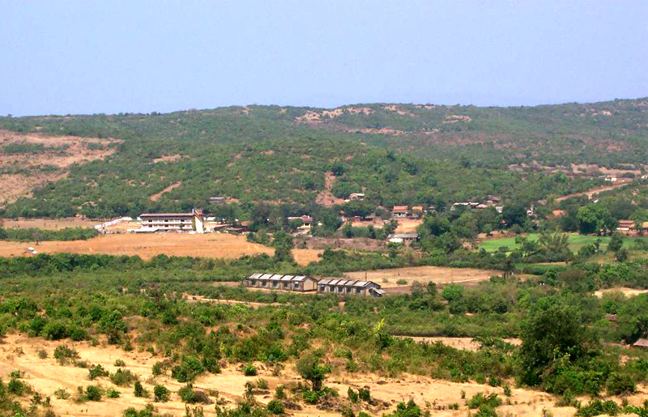
⛰️ Rainforest Hill • SindhudurgAmboli Hill Station & Waterfalls
Known as the "Cherrapunji of Maharashtra", Amboli is the wettest place in the state located in South Konkan, famous for majestic cascading waterfalls, mist, and incredible biodiversity.
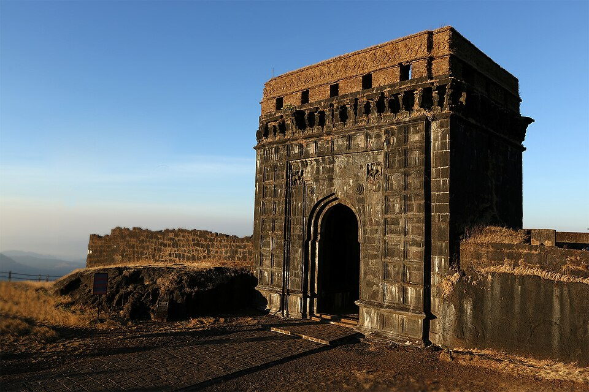
🏰 Maratha Fort • RaigadRaigad Fort (Capital of Swarajya)
The historic hill citadel chosen by Chhatrapati Shivaji Maharaj as the capital of Swarajya in 1674. Home to the Royal Throne (Raj Sabha), Shivaji Maharaj Samadhi, and modern ropeway.
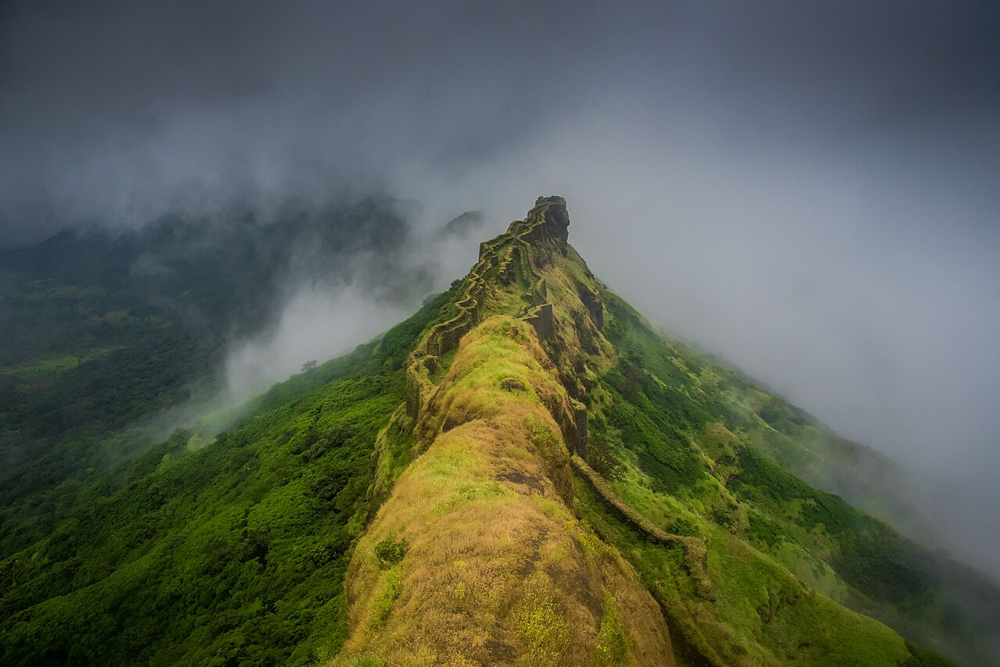
🏰 Maratha Fort • PuneRajgad Fort (Ruling Capital of Swarajya for 26 Years)
The formidable mountain capital where Chhatrapati Shivaji Maharaj resided for over 26 years, planning the expansion of Swarajya. Famous for its Balekilla, Padmavati Machi, and needle-hole rock Nedhe.
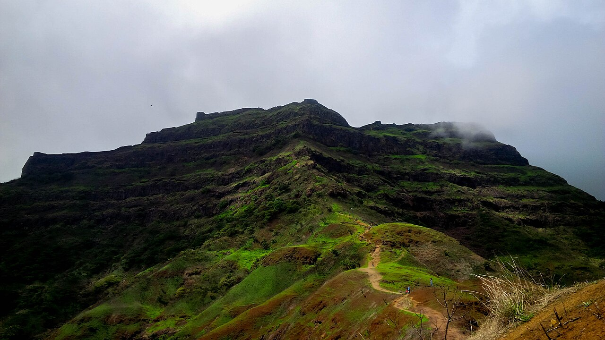
🏰 Maratha Fort • PuneTorna Fort (Prachandagad - First Fort of Swarajya)
The first fort captured by 16-year-old Shivaji Maharaj in 1646, marking the founding of Hindavi Swarajya. Nicknamed Prachandagad ("Massive Fort") for its colossal walls and ridge cliffs.
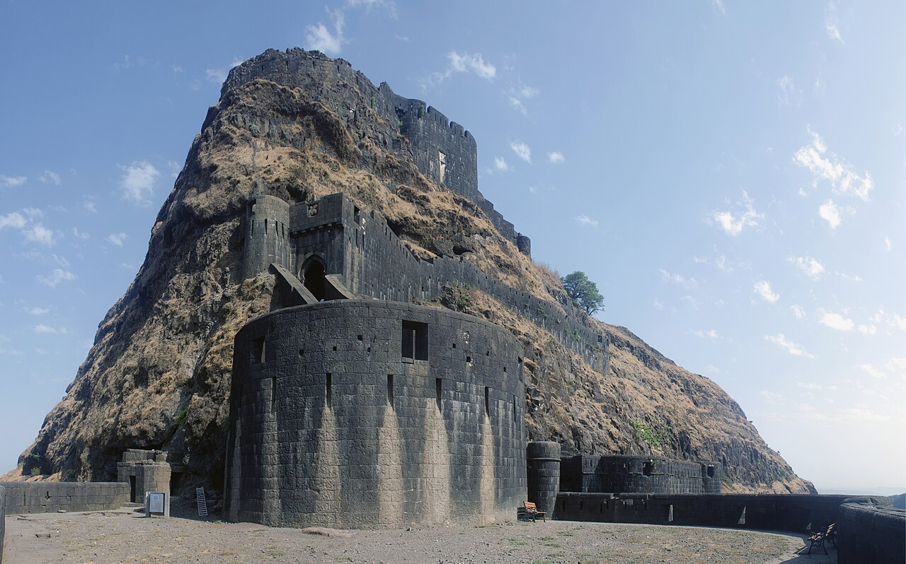
🏰 Maratha Fort • LonavalaLohagad Fort (The Iron Fort & Vinchukata)
The formidable "Iron Fort" perched at 1,033m overlooking Pavana Dam. Prominently used by Shivaji Maharaj to store treasury, famous for the iconic 1,500-meter Vinchukata (scorpion's tail) ridge.
Shivneri Fort (Birthplace of Chhatrapati Shivaji)
The sacred hill fortress where Chhatrapati Shivaji Maharaj was born on 19th February 1630. Features the prayer sanctum of Goddess Shivai, Rajgadhi, and Badami lake.
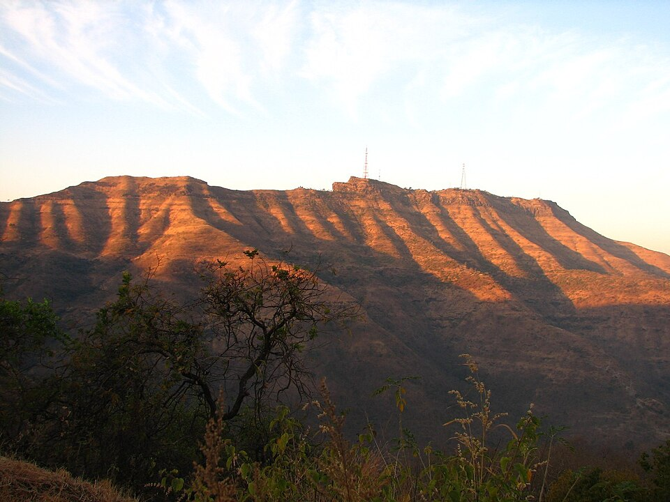
🏰 Maratha Fort • PuneSinhagad Fort & Khadakwasla, Pune
The legendary "Lion Fort" immortalized by Tanaji Malusare's heroic Battle of 1670 ("Gad aala pan sinh gela"). Famous for authentic Pithla Bhakri, Kanda Bhajji, and Khadakwasla backwaters.
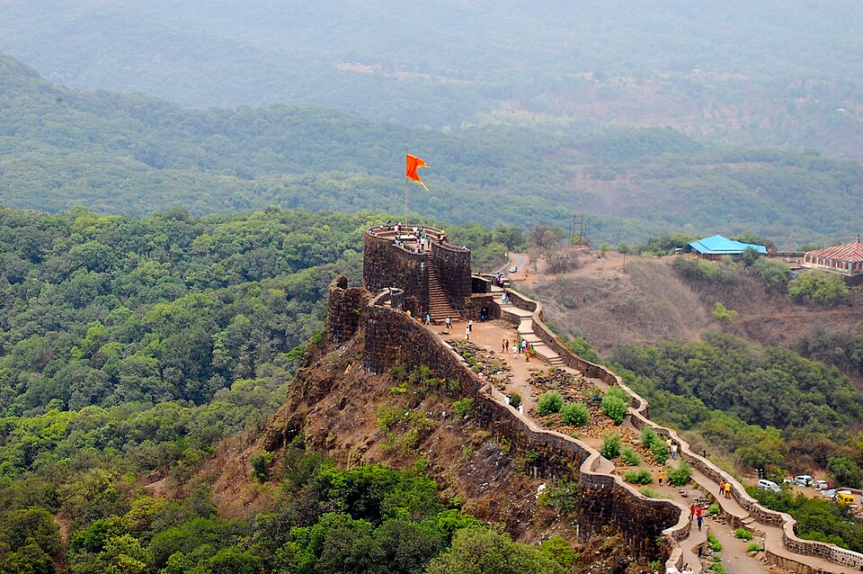
🏰 Maratha Fort • SataraPratapgad Fort & Mahabaleshwar Foothills
Built in 1656 by Moropant Pingle under Shivaji Maharaj's guidance, this fort witnessed the historic defeat of Afzal Khan. Features the sacred Bhavani temple and equestrian Shivaji statue.
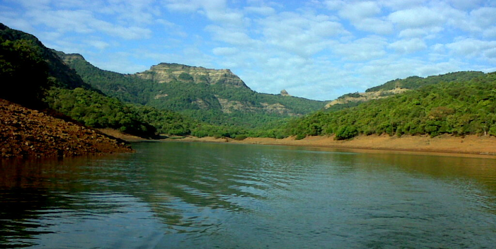
🏰 Jungle Fort • SataraVasota Jungle Fort & Koyna Wildlife Sanctuary
An incredible wilderness fort nestled deep inside the Koyna Wildlife Sanctuary, accessible only by a scenic boat safari across Shivsagar Lake followed by an enchanting rainforest trek.
 🏰 UNESCO World Heritage
🏰 UNESCO World Heritage
Ajanta & Ellora UNESCO World Heritage Caves
World-famous UNESCO World Heritage marvels: 34 Ellora caves housing the astonishing Kailasa monolithic temple carved from a single mountain, and 30 Ajanta caves with ancient Buddhist frescoes.
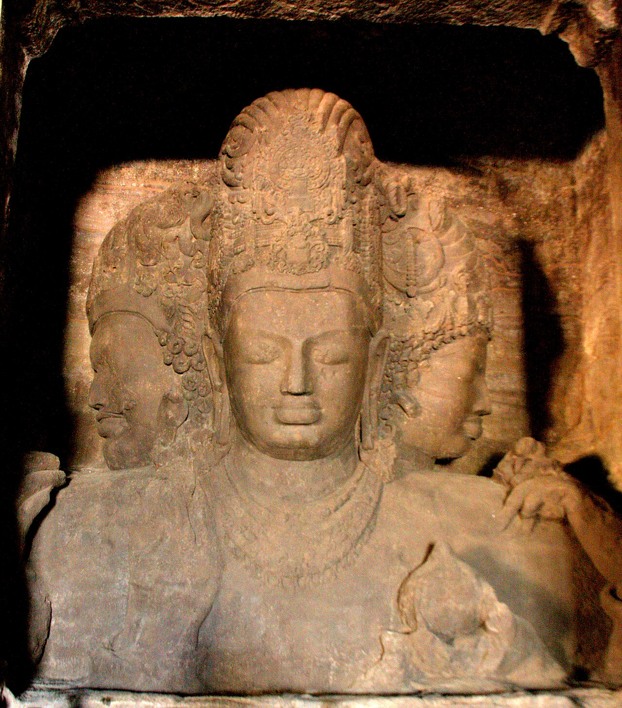
🏰 UNESCO Island • MumbaiElephanta Caves UNESCO World Heritage
A UNESCO World Heritage island in Mumbai Harbour reached by scenic ferry from the Gateway of India. Houses monumental 5th-century rock-cut cave temples dedicated to Lord Shiva.
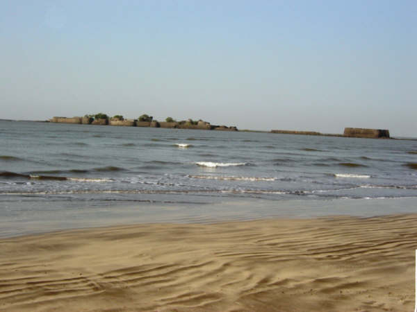
🌴 Konkan Beach • RaigadAlibaug, Nagaon Beach & Kolaba Fort
The most popular coastal getaway from Pune and Mumbai, featuring palm-fringed sands, thrilling water sports, seafood shacks, and Shivaji Maharaj's sea fort Kolaba built inside the waves.
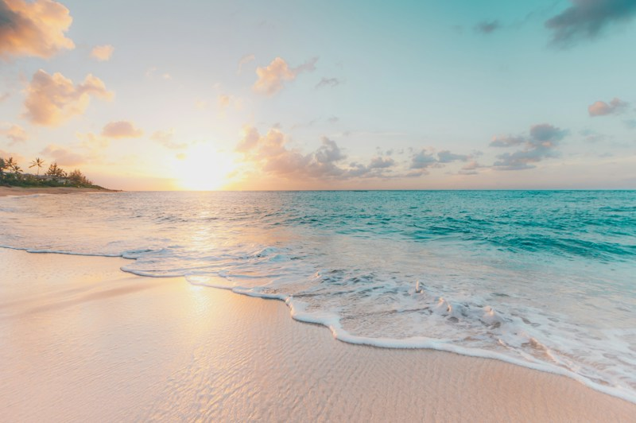
🌴 Konkan Sea Fort • RaigadMurud-Janjira Sea Fort & Beach
One of the world's strongest and most impregnable island sea forts, built in the Arabian Sea with 19 round bastions that remained unconquered throughout centuries.
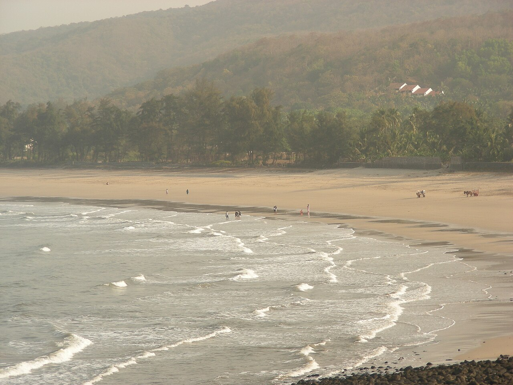
🌴 Konkan Beach • RaigadKashid Beach (White Sand Beach & Water Sports)
Renowned as one of the cleanest and most picturesque beaches in North Konkan, stretching 3 km along the Arabian Sea with silvery white sand, clear blue water, and thrilling adventure sports.
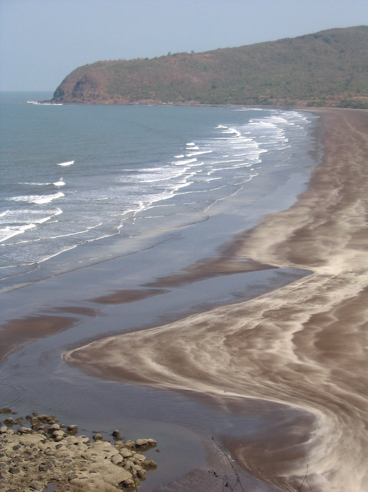
🌴 Coastal Pilgrim • RaigadHarihareshwar & Shrivardhan (Dakshin Kashi)
Reverently known as "Dakshin Kashi" (Kashi of the South), this sacred coastal paradise is where Savitri River enters the Arabian Sea, famous for Kalbhairav Mandir and dramatic sea-cliff pradakshina.
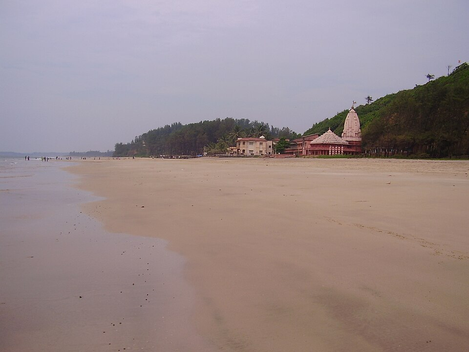
🌴 Konkan Beach • RatnagiriGanpatipule Beach & Swayambhu Ganpati
A divine coastal paradise where a 400-year-old self-originated Ganesha idol rests directly on the pristine white shores facing the Arabian Sea. The entire hill is circumambulated as pradikshana.
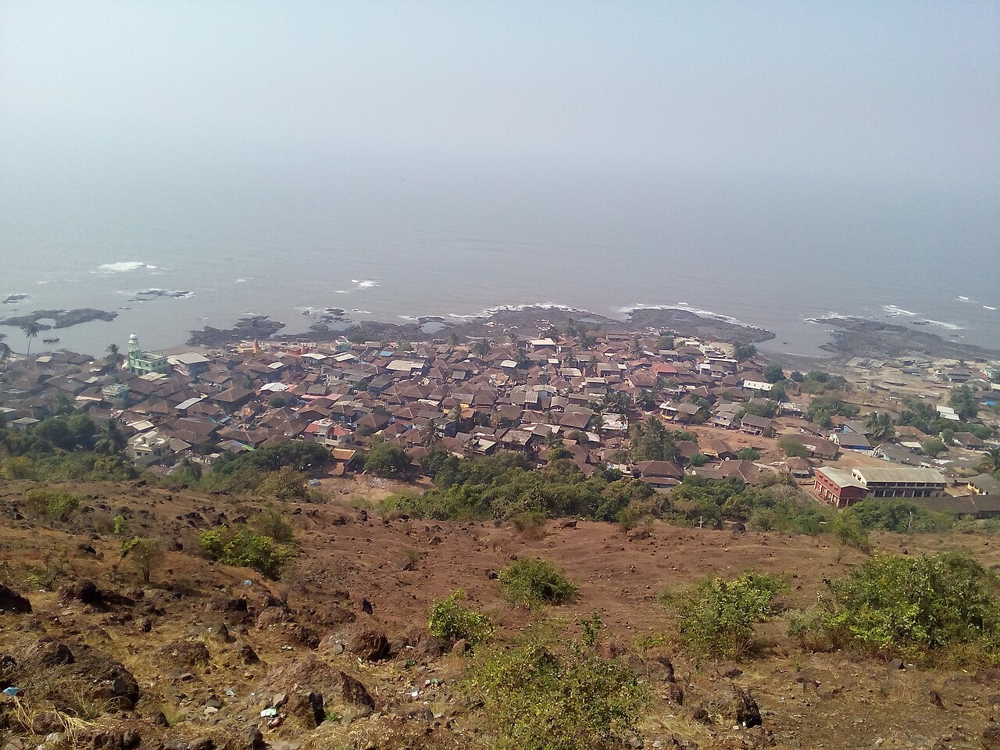
🌴 Konkan Beach • RatnagiriDapoli & Murud-Harnai (Dolphin Safari & Sea Forts)
Known as the "Mini Mahabaleshwar of Konkan" for its year-round cool breeze, Dapoli features unpolluted beaches, live Arabian Sea dolphin watching, fish auctions at Harnai, and historic Suvarnadurg.
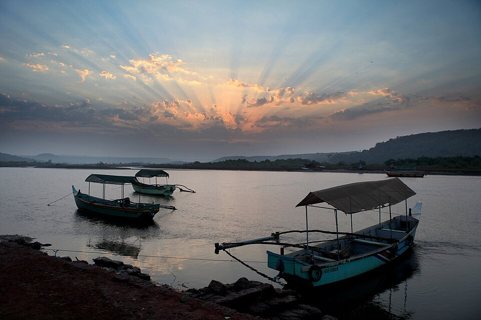
🌴 Konkan Beach • MalvanTarkarli Scuba & Sindhudurg Sea Fort
Maharashtra's premier scuba diving and coral hub in Malvan, offering crystal clear waters, dolphin safaris, Karli backwaters, and Chhatrapati Shivaji Maharaj's majestic 1664 Sindhudurg Fort.
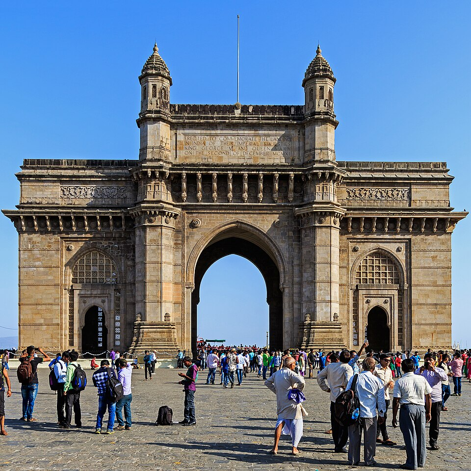
🏙️ City Tour • MumbaiGateway of India & Mumbai Darshan
The iconic commercial capital of India: cruise past Marine Drive's Queen's Necklace, Gateway of India, Bandra-Worli Sea Link, Siddhivinayak Temple, and Bollywood Film City in AC comfort.
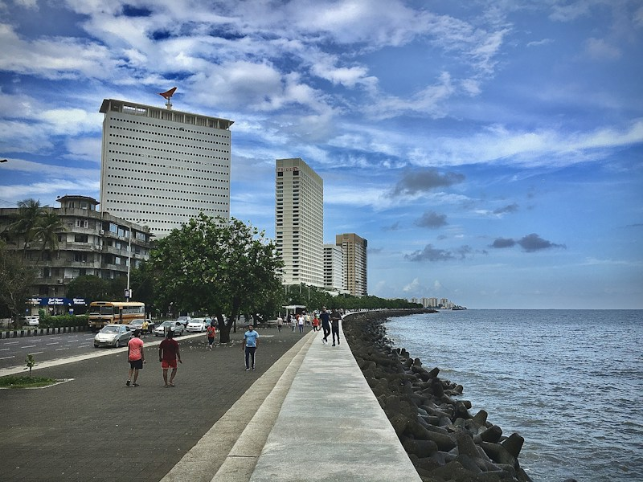
🏙️ City Tour • PuneShreemant Dagdusheth & Pune Heritage
Explore the cultural capital of Maharashtra: seek blessings at the world-famous golden Shreemant Dagdusheth Ganpati, walk through Peshwa historic fortress Shaniwar Wada, and Aga Khan Palace.
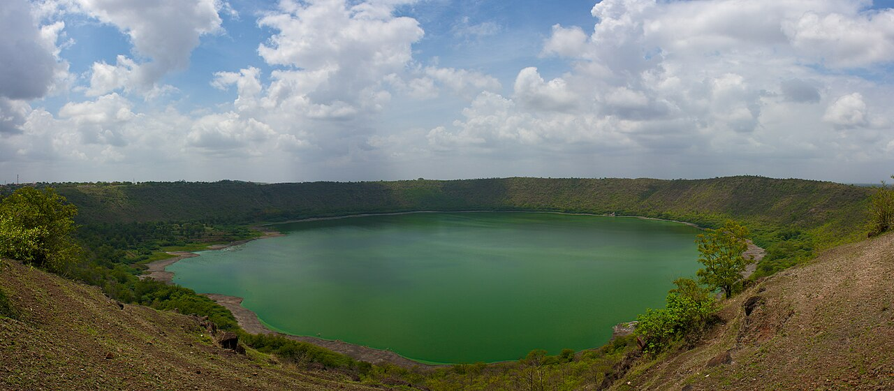
🏙️ Geo Wonder • BuldhanaLonar Meteorite Crater Lake
One of the world's rarest natural wonders: a 52,000-year-old hyper-saline meteorite impact crater lake formed in basalt rock, ringed by ancient 12th-century Hemadpanthi temples and lush forest.
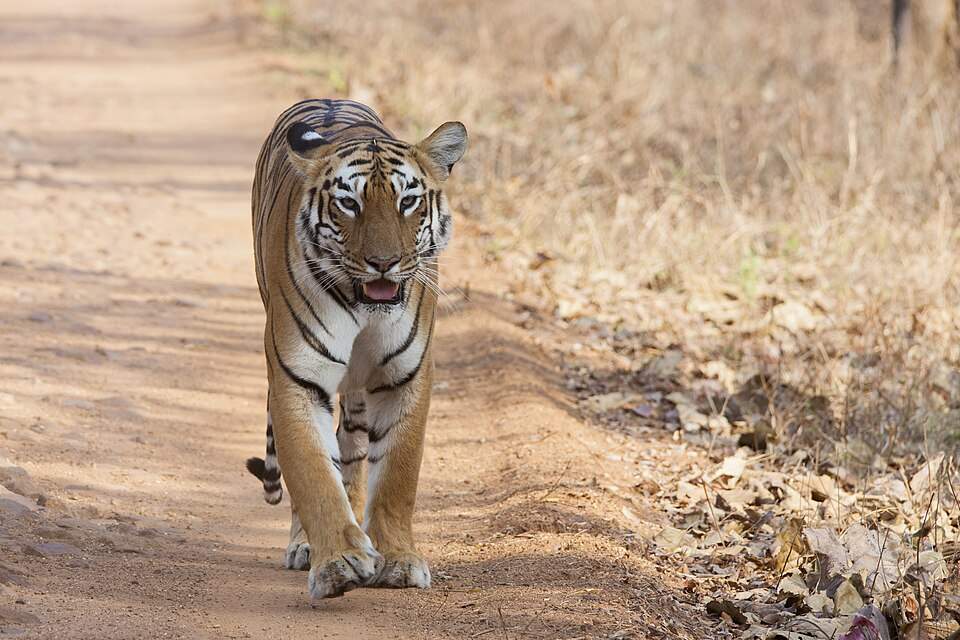
🏙️ Wildlife Safari • ChandrapurTadoba-Andhari Tiger Reserve Wildlife Safari
Maharashtra's oldest and premier national park in Chandrapur, internationally renowned for highest tiger sighting density, thrilling open-top gypsy safaris, leopards, and Erai Lake.